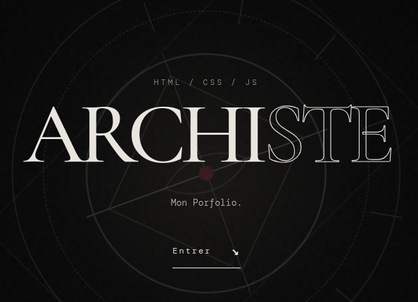
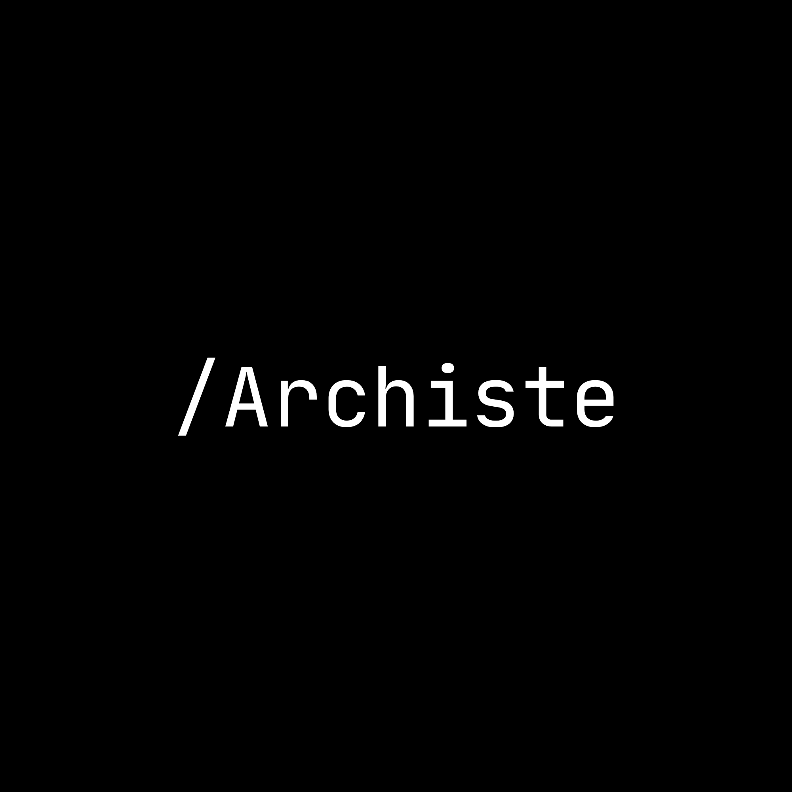
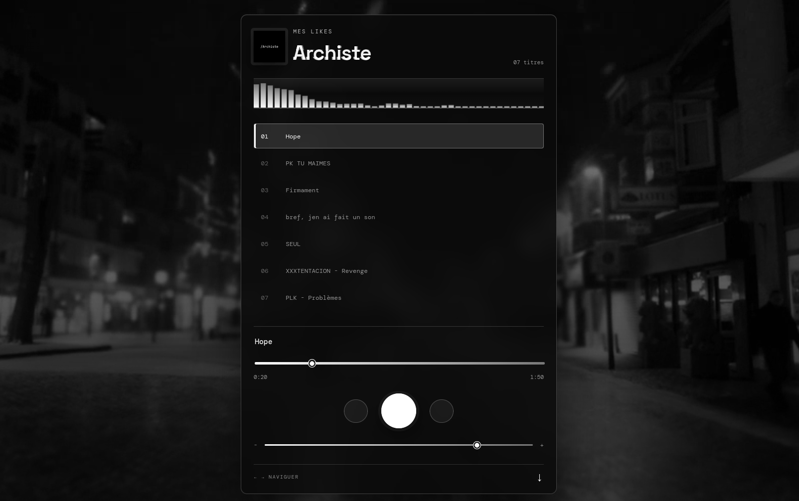
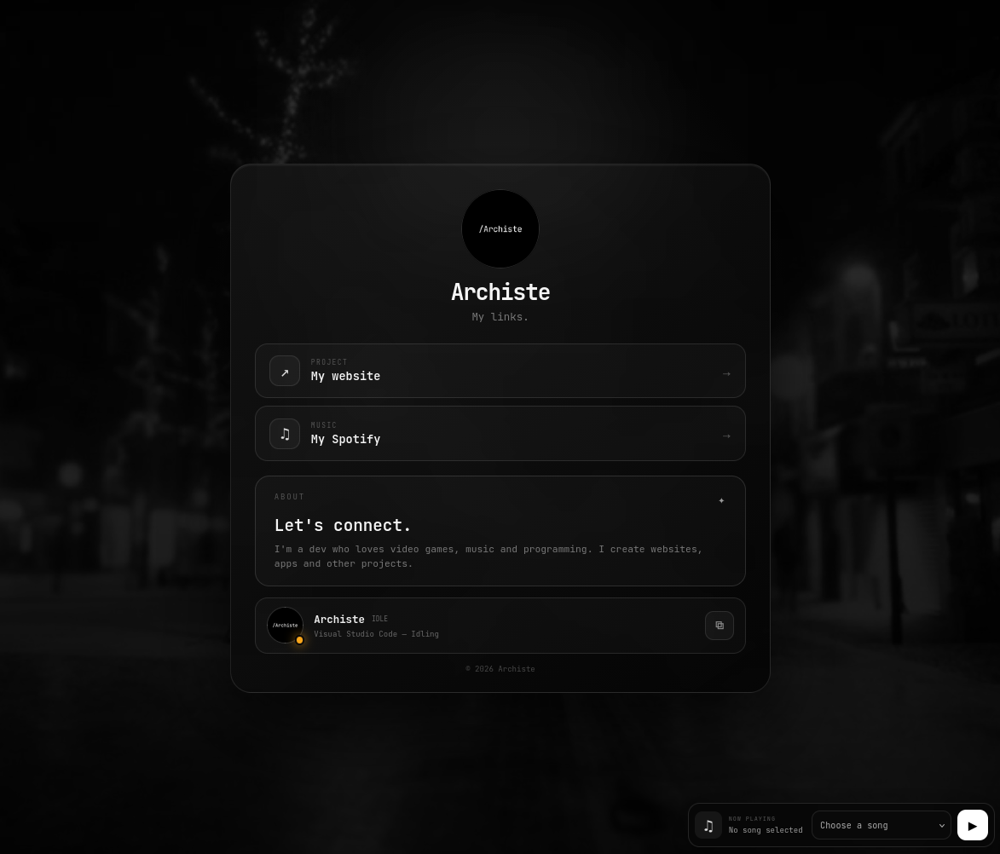

001

✦
ARCHISTE/ 2026
MON PORTFOLIO
Site personnel qui présente mon parcours, mes compétences et mes créations web.
SYSTEM ONLINE
ARCHISTE // PORTFOLIO // DEV WEB
Qui je suis

Je conçois des identités visuel à des sites et des applications web. Je suis passionné par le dévelopement, le design de site et la DA de site.
j'ai commencer le developement web en debut 2026, j'ai appris le HTML, CSS et JS par moi meme. Je suis actuellement en train d'apprendre le SQL pour pouvoir créer des applications web.
PROJETS SELECTIONNES

ARCHISTE/ 2026
Site personnel qui présente mon parcours, mes compétences et mes créations web.

ARCHISTE/ 2026
Interface audio minimaliste avec lecture, j'ai ajouté des fonctionnalités avec une horloge un link a mon discord et des effet de glitch.

ARCHISTE/ 2026
Page de liens utiles et d'accès rapide.
DISCIPLINES
03 — CONTACT
Chargement du statut Discord…
Chargement de l’activité…
Pseudo copié